FootyLog: Match & Training Analytics
Візуальний огляд
 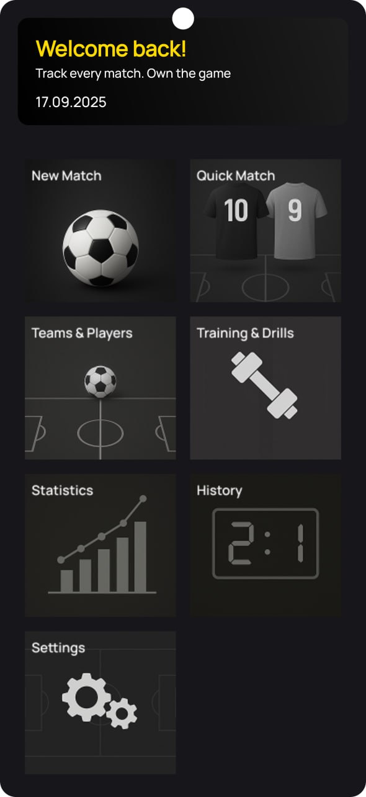
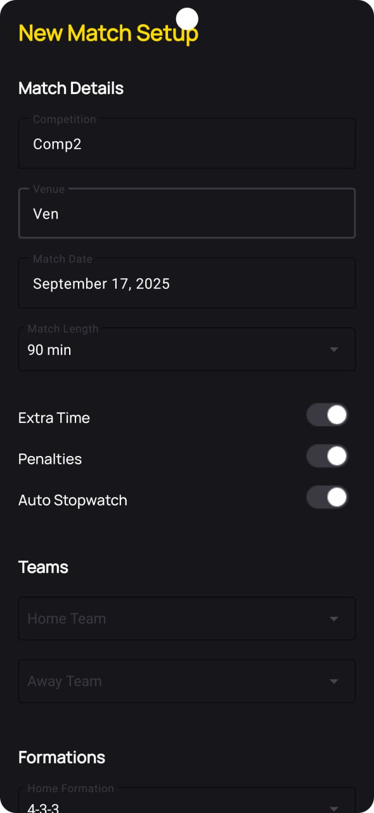
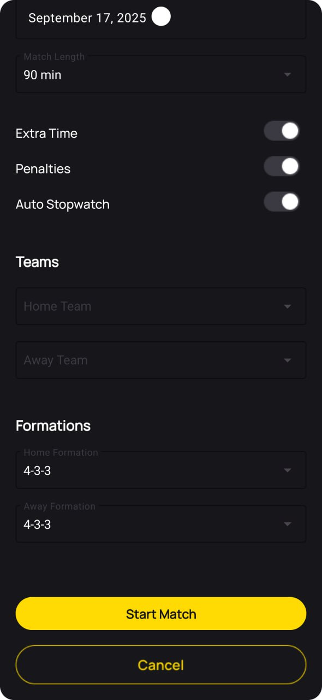
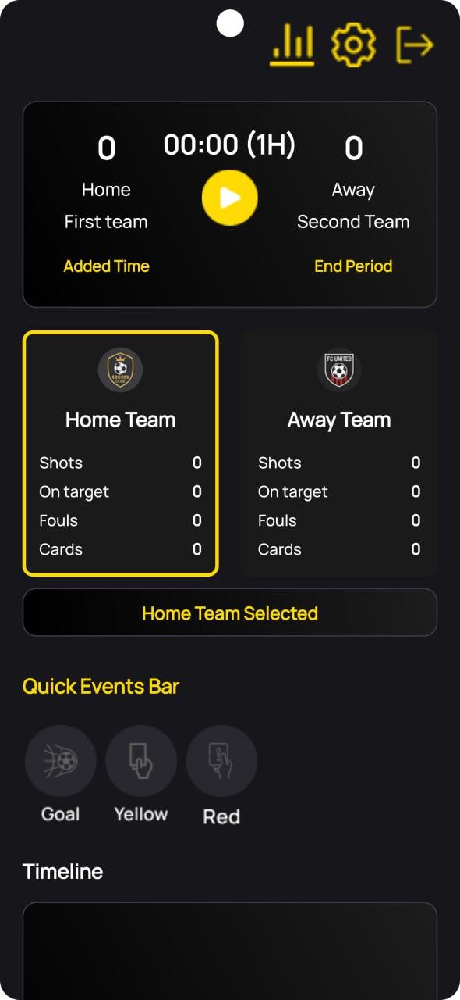
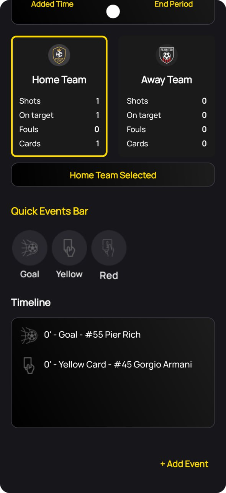
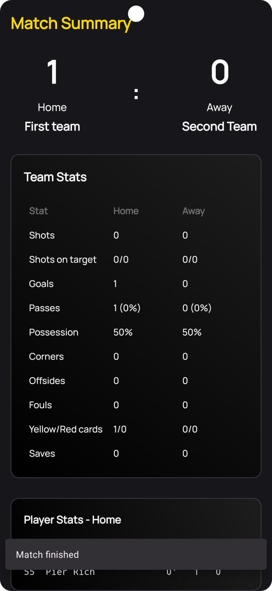
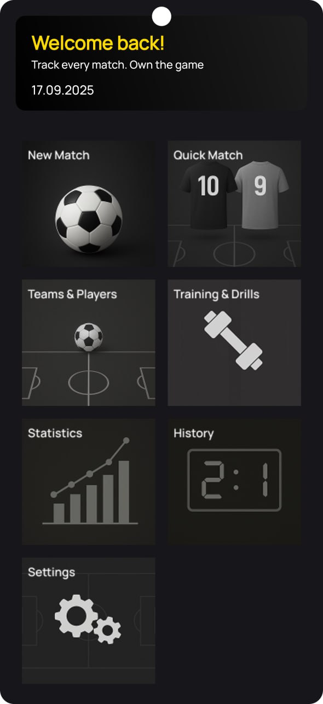
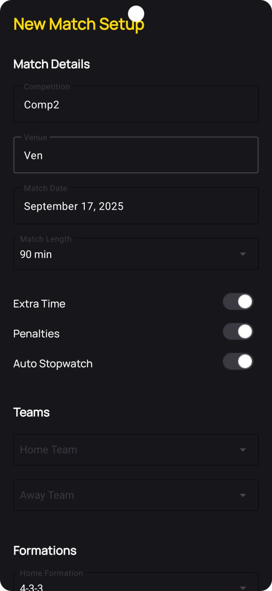
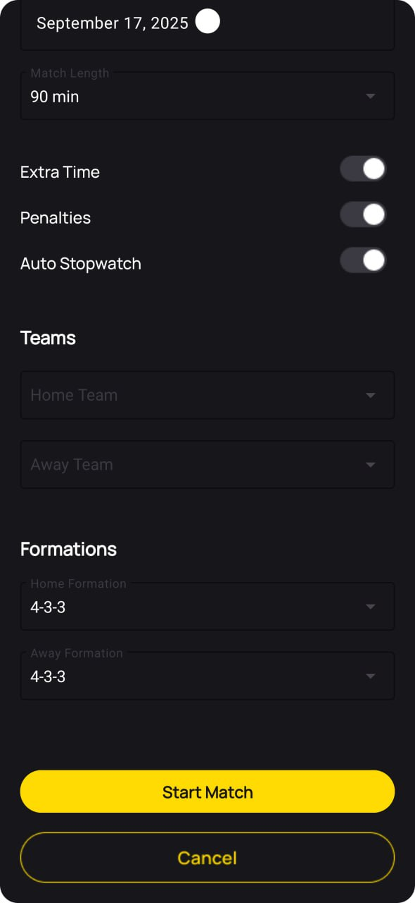
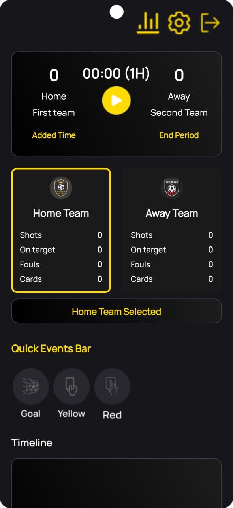
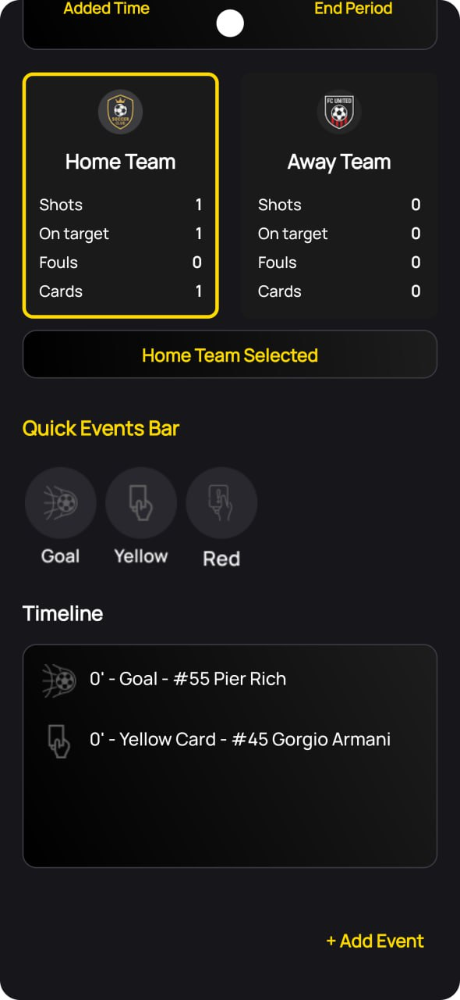
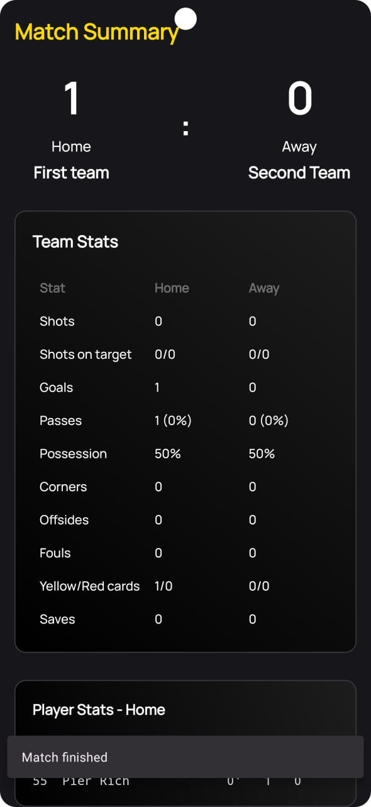
Огляд продукту
FootyLog — це потужне офлайн-рішення для тренерів та спортивних аналітиків. Застосунок дозволяє фіксувати кожну подію на полі в реальному часі, вести тренувальні сесії та автоматично отримувати глибоку аналітику без підключення до мережі.
⏱ Live Match Engine
Реалізація власного таймера з управлінням періодами (added time, penalties). Швидка панель подій (Quick Events) дозволяє фіксувати голи та заміни за секунду.
📈 Statistics Engine
Система автоматичної агрегації даних. Розрахунок KPI для команд та гравців (W/D/L, точність ударів, ефективність формацій).
🏅 Achievements Engine
Логічний модуль, що аналізує історію матчів та автоматично відкриває досягнення, такі як "Hat-trick" або "Clean Sheet Streak".
🏋 Training & Drills
Спеціальні режими для тренувань: Shooting, Passing, Sprints. Автоматичний підрахунок конверсії та середнього часу.
Технічна архітектура
Додаток побудований за принципом Offline-First. Використання Room дозволило реалізувати складну схему даних із багатьма зв'язками (One-to-Many, Many-to-Many).
- Kotlin + Flow: Забезпечують реактивне оновлення інтерфейсу при зміні локальних даних.
- Custom UI: Налаштовувана панель подій через JSON-конфігурацію.
- Business Logic: Алгоритм визначення "Player of the Week" на основі вагових коефіцієнтів ігрових подій.
Висновок
Цей проєкт демонструє здатність проектувати складні автономні системи з глибокою бізнес-логікою та багаторівневою аналітикою даних. Це приклад архітектурно зрілого мобільного продукту.